მადარტი · შპს „არბო 2009" · თბილისი
ყველა ვიზუალური მიმართულება, რაც მადარტის მთავარი გვერდისთვის დამუშავდა — თორმეტი სრული მაკეტი და კვლევის ხუთი დოკუმენტი. თითოეული მაკეტი ცოცხალია: იხსნება, სქროლდება, ღილაკები და ანიმაციები მუშაობს.
მეორე რეფერენს-კვლევის შემდეგ აგებული მიმართულებები. სამი დამოუკიდებელი ვიზუალური სისტემა (ეტიკეტი · დახლი · მოზაიკა), გამარტივებული ვერსია და სამი საფეხური Arensbak-ის ენაზე — სექციებიდან სრულ კარკასამდე.
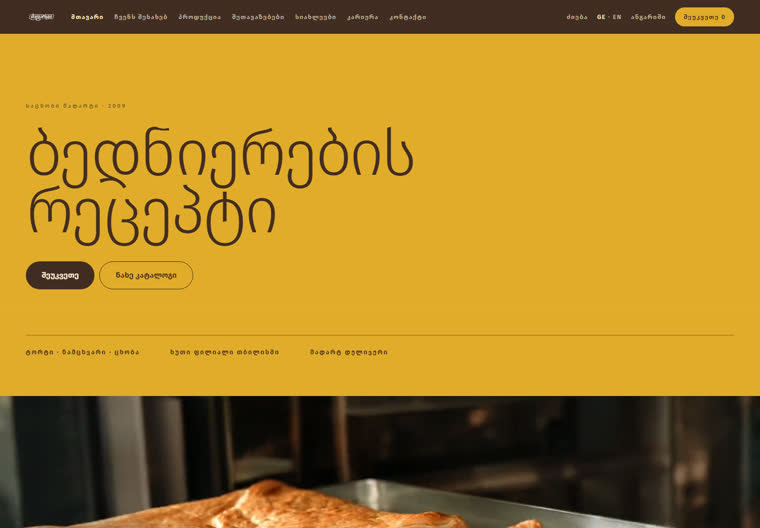
ბრტყელი ფერის ველები, ტიპოგრაფია 138px-მდე. ფოტო აქ ფონი არაა — ამოჭრილი ობიექტია ფერზე.
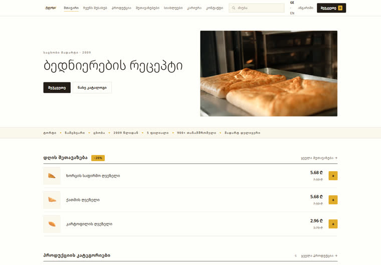
მთავარი გვერდი, როგორც მუშა დახლი: ღია საძებნი ველი, ფასი და მარაგი პირველივე ეკრანზე. ჰერო-ფოტო არ არსებობს.
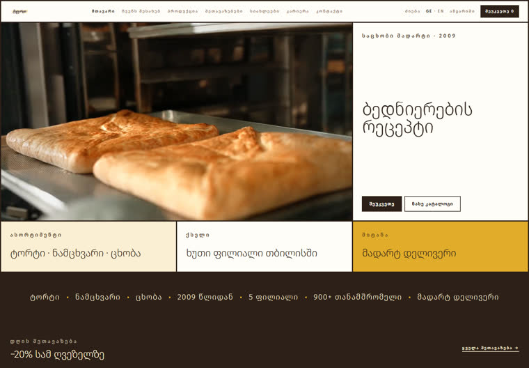
ერთი ბადე კიდიდან კიდემდე, 3px მუქი ნაკერით. ფოტო დომინირებს, ტექსტი ბადეში ჯდება.
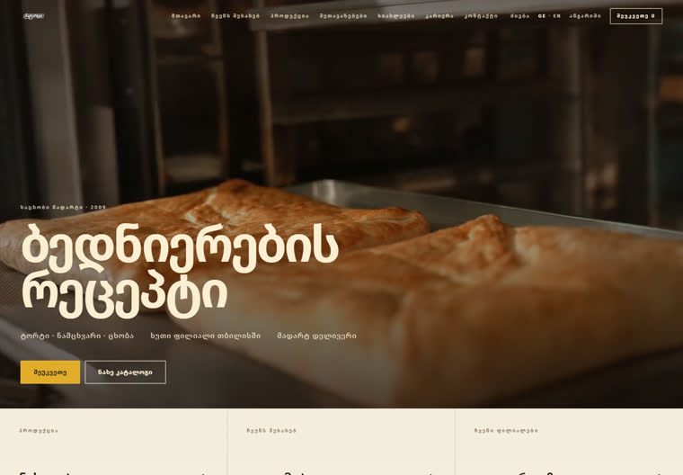
Arensbak-ის მთავარი გვერდის სრული აგებულება, ჩვენი შინაარსით. ყველაზე შორს წასული ვერსია ამ ხაზში.
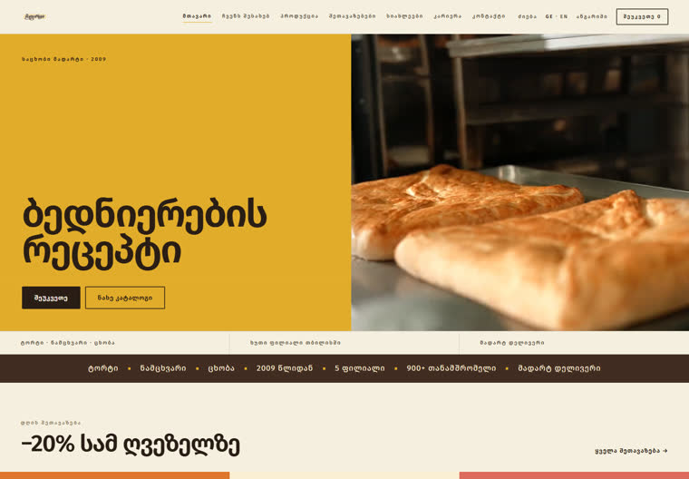
ჩვენი ცხრავე სექცია გადაყვანილი პანელების ენაზე — შუალედური საფეხური სექციებსა და სრულ კარკასს შორის.
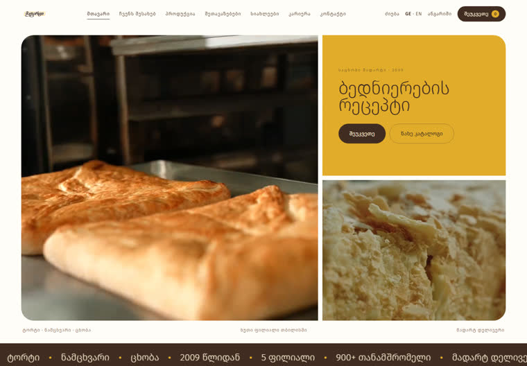
პირველი ცდა: ორი სექცია გადაყვანილი რეფერენსის ენაზე, დანარჩენი უცვლელი. საწყისი წერტილი ამ ხაზისთვის.
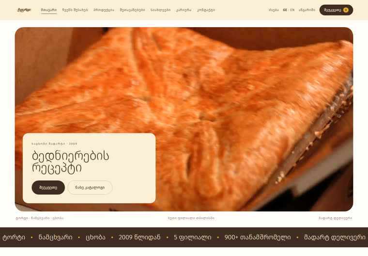
იგივე ცხრა სექცია, უფრო მშვიდი განლაგებით და ერთი ვიდეოთი ორის ნაცვლად.
პირველი კვლევიდან გამოსული მიმართულებები. აქედან ორი ცოცხალია: „ბედნიერების რეცეპტი" კლიენტს გაგზავნილია, „ჟურნალი" ხელახლა დამუშავებაშია.
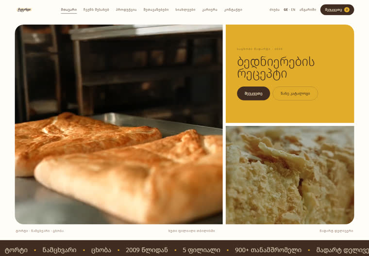
მიმდინარე მიმართულება. რეფერენსი — Lune Croissanterie. ჰერო ვიდეო-ბენტოა, ფილიალები აკორდეონი, კატეგორიები ექვსი ფერის ველი.
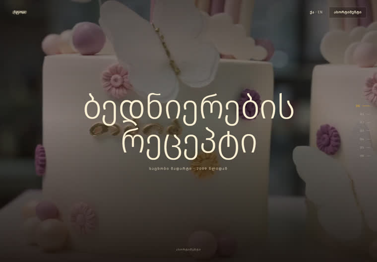
მთავარი გვერდი შვიდ თავად: გახსნა · ასორტიმენტი · ჩვენს შესახებ · საწარმო · დელივერი · ფილიალები · ვაკანსიები. თითოეულს თავისი განლაგება.
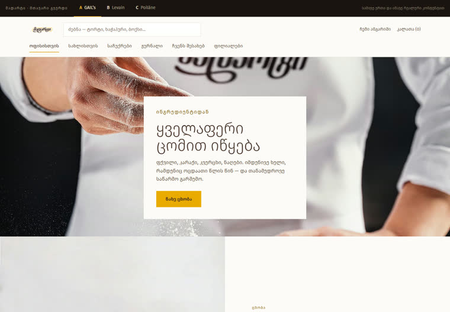
სამი მიმართულება ერთ ფაილში, თითო რეფერენსის სტრუქტურით: GAIL's · Levain · Poilâne.
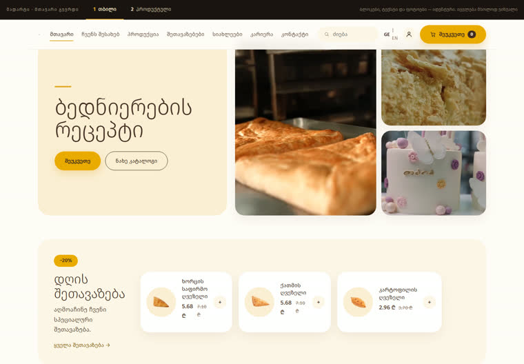
ორი ვერსია იდენტური ჰედერით და იდენტური ინფორმაციით — განსხვავება მხოლოდ განლაგებაშია.
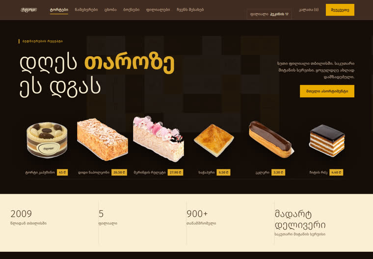
მუქი ყავისფერი, კვადრატული ფორმები, ამოჭრილი პროდუქტები. კლიენტმა უარყო — ისტორიისთვის რჩება.
დიზაინები ჰაერში არ გაჩენილა — წინ უსწრებს ორი რეფერენს-კვლევა და განლაგებების რუკა. ეს დოკუმენტები მსუბუქია და სწრაფად იხსნება.
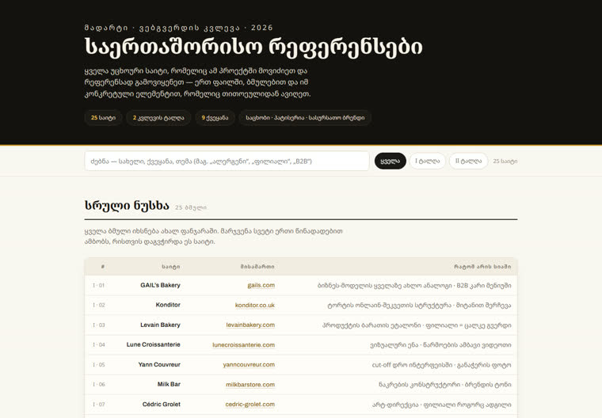
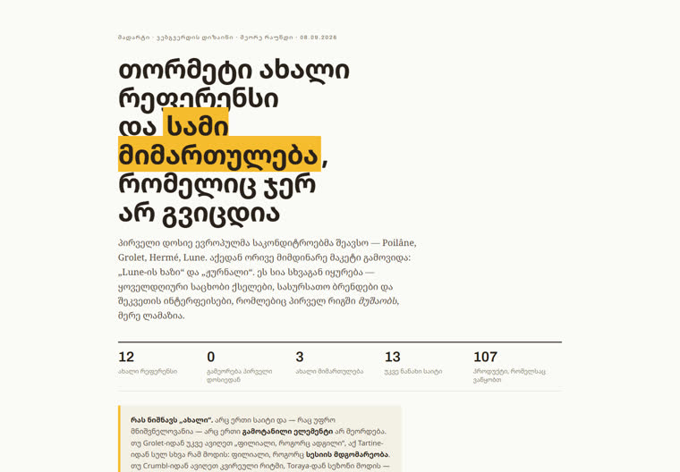
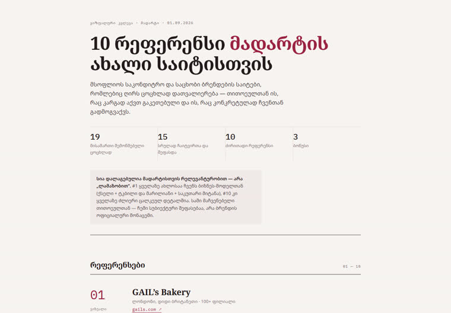
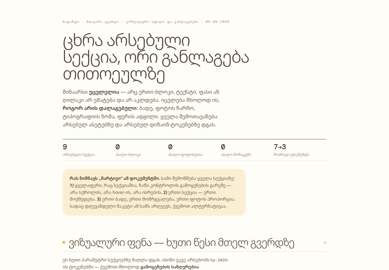
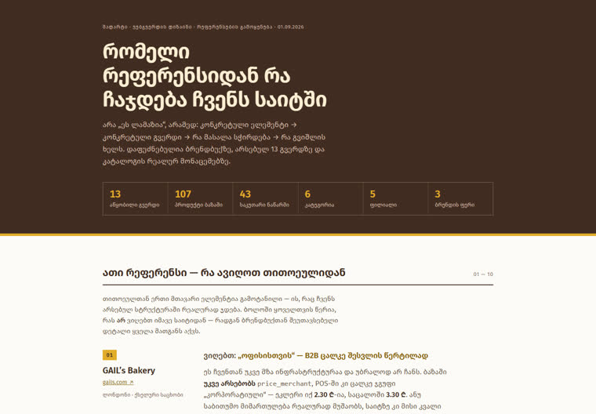
ერთი რამ ჩამოტვირთვაზე. მაკეტებში ფოტოები და ვიდეოები თვით ფაილშია ჩაშენებული, ამიტომ თითოეული 6–12 MB-ია. პირველად გახსნას 5–15 წამი სჭირდება, მერე ბრაუზერი ინახავს და მყისიერად იხსნება. მობილურ ინტერნეტზე ჯობია Wi-Fi-ზე გახსნათ.